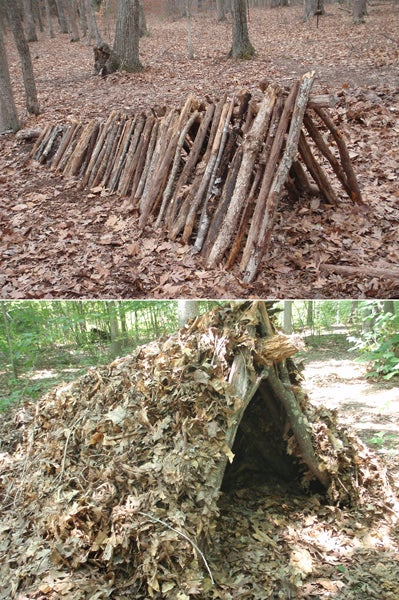

Leaf Hut
The leaf hut is a two-sided, wedge-shaped lean-to with much better weatherproofing and insulating qualities. To build one, select a long, sturdy pole 9 to 12 feet long. Prop it up in the fork of a tree; or set it on a rock, stump, or two forked prop sticks. Then, cover the sides of the pole with tree branches to act as ribs. These are placed at an angle along both sides of the ridge pole. Place the ribs close together so that your hut covering won’t fall through. Next, heap vegetation over the framework (this can be anything that traps air, including grass, ferns, moss, pine needles, brush, or pine boughs). Two to 3 feet of vegetation covering all sides of the shelter is enough to keep you dry inside. Finally, fill the inside of the hut with a thick pile of vegetation for your bedding.
In case of high winds: A layer of brush, sticks, twigs or branches should be thrown over the whole hut to keep the wind from stripping the vegetation away.